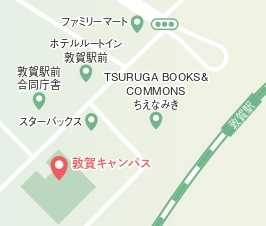
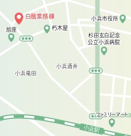

概要
Outline
センター長挨拶

本学では、令和４年度から始まった第４期中期目標期間において、福井県・嶺南２市４町と本学が連携し、包括的に地域課題解決を行う「嶺南地域共創事業（プロジェクト）」の実施を柱の一つとして掲げています。本プロジェクトでは、嶺南地域を実装の場として、地域課題解決に向け、4学部がそれぞれの専門性に軸足を置きつつ緊密に連携し、課題解決プロジェクトを軸とした、職種の違いを超えて包括的に課題に対処できる資質・能力を培う多職種連携教育、及び専門教育で培った知識・スキルを社会生活とリンクさせるための実践的教育を展開します。これらの「社会共創教育」の展開により、包括的に課題に対処できる資質・能力を持った卓越高度専門職業人を養成するとともに、社会変革につながるイノベーションの創出を主導します。
福井大学地域創生推進本部
附属嶺南地域共創センター長
野嶋 慎二
専任教員紹介
氏名（職名）：野嶋 慎二（特命教授）
専門分野：まちづくり、建築
研究テーマ：地域の資源を生かしたまちづくり、持続可能な住宅団地の設計、地域の拠点施設の設計、公園整備計画と設計
氏名（職名）：山形 亮太（特命助教）
専門分野：建築・都市計画、まちづくり
研究テーマ：嶺南地域における過疎集落の継承の可能性、地域資源を活かしたまちづくり
アクセスマップ
敦賀サイト

〒914-0055
福井県敦賀市鉄輪町1-3-33 福井大学敦賀キャンパス
TEL：0770-25-0553
開所時間：午前8時30分～午後5時15分（平日）
アクセス：
電車利用の場合、JR敦賀駅下車徒歩5分
自家用車利用の場合、北陸自動車道 敦賀インターチェンジから７分
小浜サイト

〒917-0069
福井県小浜市小浜白鬚112 白鬚業務棟3F
TEL：0770-64-5340
開所時間：午前9時～午後4時（平日）
アクセス：
電車利用の場合、JR小浜駅下車徒歩7分
自家用車利用の場合、舞鶴若狭自動車道 小浜インターチェンジから約7分